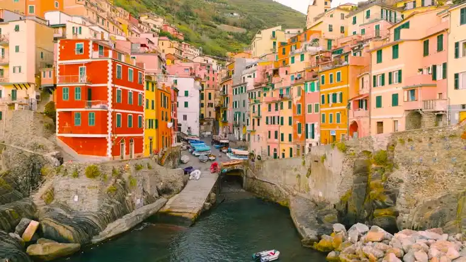

Taniti City is the heart of the island, where most tourists go to experience the best of what the island has to offer. The city is known for its stunning native architecture, showcasing traditional designs that offer a glimpse into the island's rich history. Stroll through the vibrant streets and discover the unique charm of Taniti's buildings.
For those looking to venture further, Taniti offers exciting tours and activities. Boat or bus tours of the island give you the chance to see its diverse landscapes, from coastal cliffs to lush forests. If you're an adventure enthusiast, take a hike through the island's vibrant rainforest, where you can immerse yourself in the beauty of tropical flora and fauna. For a truly unique experience, visit Taniti's active volcano, a natural wonder where you can witness the island's raw power up close.